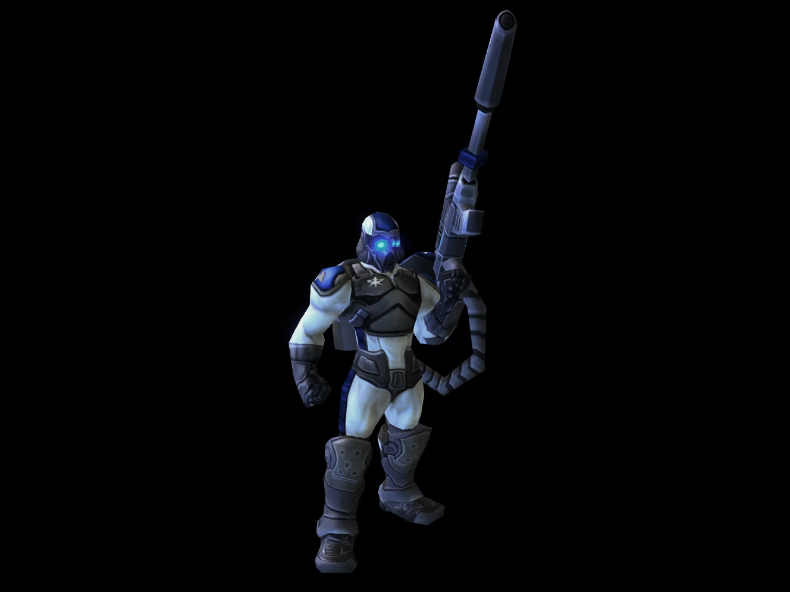
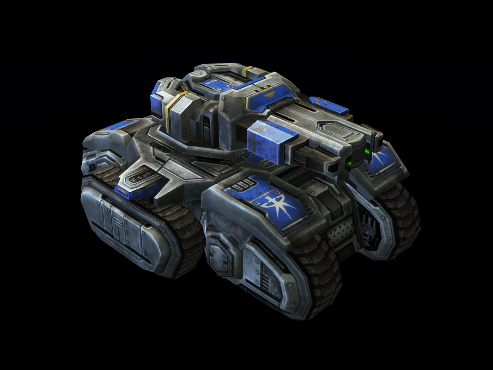
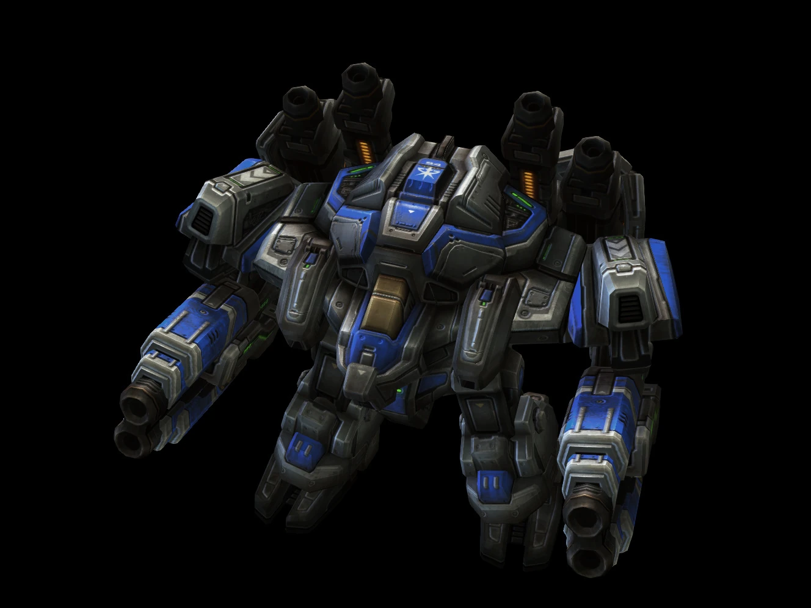
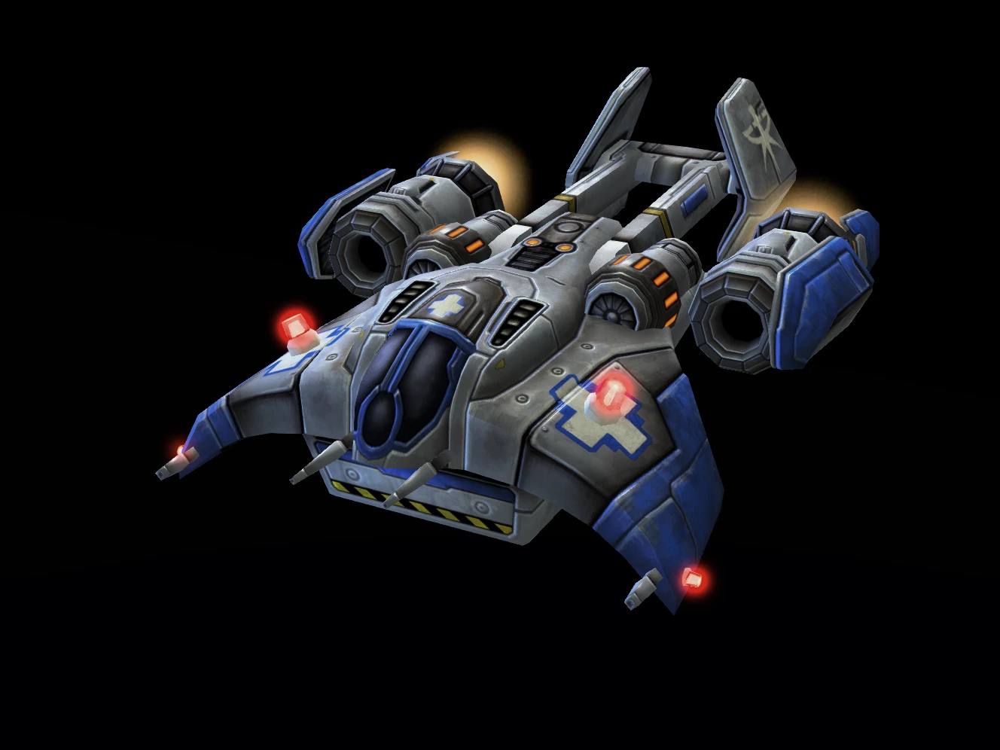
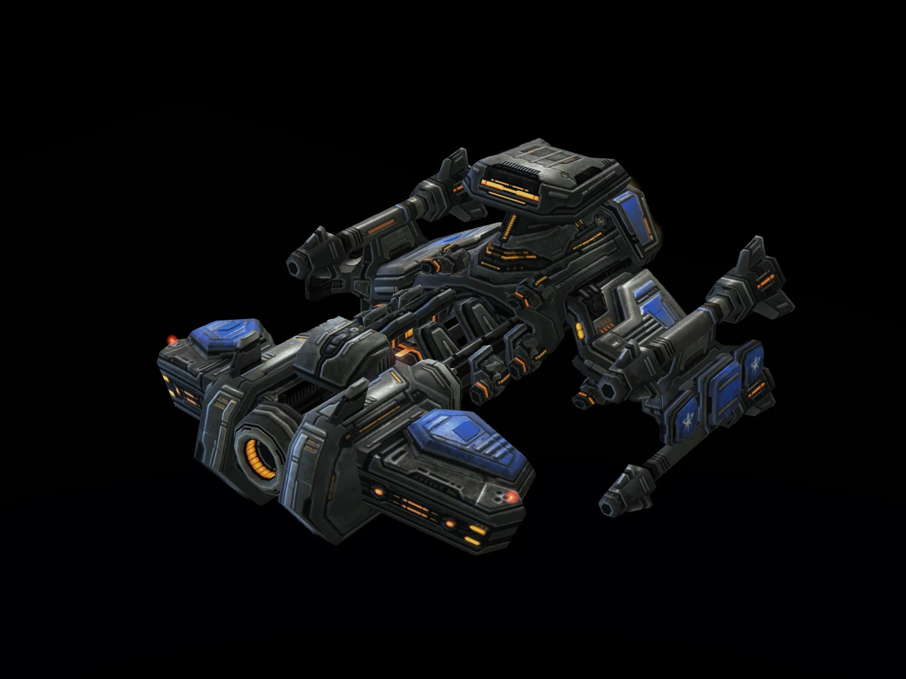

A Koprulu szektort benépesítő fajak közül a legifjabb a Terran. Évszázodokkal ezelőtt, a földről indított katasztrófális kolonizáló expedició leszármozattai ők, akik nem rendelkeznek fejlett technológiával mint a protossok, vagy biológiai fejlettséggel mint a zergek. A terran katonai erők ellenálló, sokoldalú egységek változatos keverékére támaszkodnak, hogy kijátsszák ellenségeiket.
-Épületek amik felemelkednek
-Átalakuló egységek mint a Viking és a Hellion
-Rengeteg használható stratégia, gyalogos és gépesített stílust magába foglalva
| Icon | Egységnév | Egység leírás |
|---|---|---|

|
SCV | A T-280 űrépítő jármű (vagy SCV) egyfajta általános célú műszaki jármű. Az SCV épít épületeket, gyűjti a nyersanyagokat és képes megjavítani a sérült épületeket és mechanikus egységeket. |

|
Marine | A marine-k alkotják a legtöbb terran frontvonalbeli erő zömét. Marine-k lehetnek hivatalosan a kormány által jóváhagyott egységektől kezdve a helyi milíciákon és magán biztonsági cégeken át kalózok, renegátok és zsoldosok is. A marine a Terran erők alapvető gyalogsági egysége. |

|
Marauder | A marauder elsősorban a marine-ek támogató egysége. Páncélzatát nehéz szárazföldi célpontok, (elsősorban zerg páncélosok) ellen fejlesztették ki, a korábbi firebat egységek felszerelése alapján. |
|  | SCV | A Terran Dominion kormányának hivatalos nyilatkozata az, hogy a ghost-ok és a Ghost Program nem létezik. A ghost-ok rettegett terráni titkos ügynökök. Ismertek bérgyilkos, pszionikus, és álcázási képességükről, amihez egy álcázó eszközt használnak. |
|  | Siege Tank | Az siege tank két üzemmódban működik. Az első a "tank" vagy "roham üzemmód", amelyben a jármű páncélozott támogató szerepkörben használható, viszonylag könnyű fegyverekkel. A második a radikálisabb "ostrom üzemmód", amelyben a jármű egy rögzített pozícióba kerül, így sokkal erősebb és nagyobb hatótávolságú fegyverek bevetésére képes. |
|  | Thor | A thor a terran erők hatalmas és erős mechanikus ostromjárója, amely a Dominion fegyveres erőinek egyik legnehezebb és legerősebb mechanikus egysége. |
|  | Medivac | Az orvosi evakuációs szállítóhajó, hivatalos nevén G-226 medical transport, (röviden medivac) egy terran légi egység, amely a harctéren a sebesült csapatok orvosi ellátását, és menekítését biztosítja. |
|  | Battlecruiser | Bár némi időbe telhet, mire bevethetővé válik, de ha már működőképes, a battlecruiser könnyen felveszi a versenyt bármely ellenfél (legyen az Protoss, Terran vagy Zerg) legerősebb egysegeivel. A battlecruiser nem különbözik egy önálló kisvárostól. Megközelítőleg 4000 és 7000 fős legénységnek ad otthont. A hadihajókhoz szükséges szabványos létesítményeken kívül számos kantinnal és pihenőhelyiséggel is büszkélkedhetnek. |